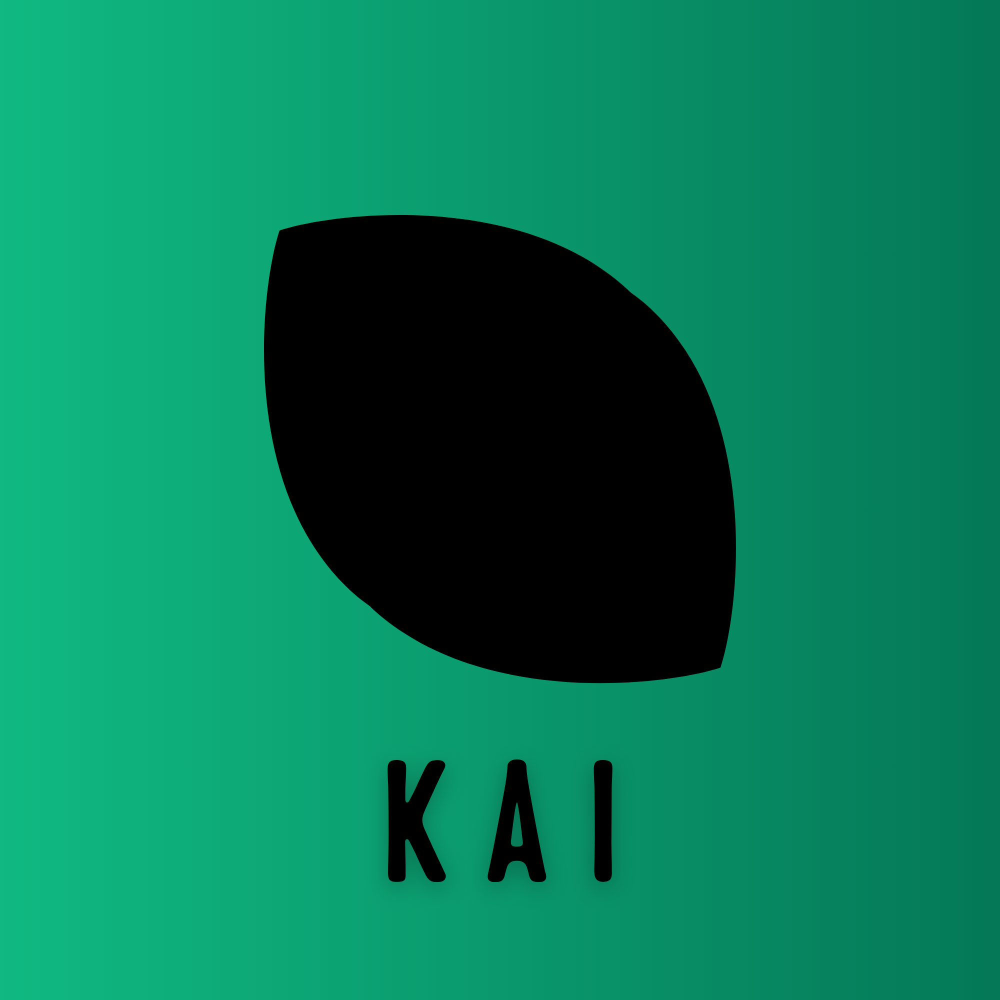

KissanAI
Kissan Assistant / کسان اسسٹنٹ
Ask questions about plant care, diseases, or farming in English or Urdu.
About KissanAI / ہمارے بارے میں
KissanAI is an intelligent, lightweight diagnostic Progressive Web Application built to deliver fast plant species identification and plant pathology detection.
کسان اے آئی ایک ذہین اور ہلکی پھلکی تشخیص کار پروگریسو ویب ایپلی کیشن ہے جو پودوں کی اقسام کی فوری شناخت اور بیماریوں کی تشخیص کے لیے بنائی گئی ہے۔
Core Features / اہم خصوصیات
-
Species Categorization: Identifies species with confidence metrics.اقسام کی درجہ بندی: قابل اعتماد پیمائش کے ساتھ پودوں کی اقسام کی شناخت کرتا ہے۔
-
Pathology Detection: Detects fungal, bacterial, and viral infections.بیماریوں کی تشخیص: پھپھوندی، بیکٹیریا اور وائرل انفیکشن کی تشخیص کرتا ہے۔
-
Treatment Advice: Provides biological and chemical intervention options.علاج کا مشورہ: حیاتیاتی اور کیمیائی علاج کے حل فراہم کرتا ہے۔
Lead Developer / لیڈ ڈیولپر
Syed Ebtisam Ali
Software Engineer & Full-Stack Developer
سافٹ ویئر انجینئر اور فل اسٹیک ڈیولپر